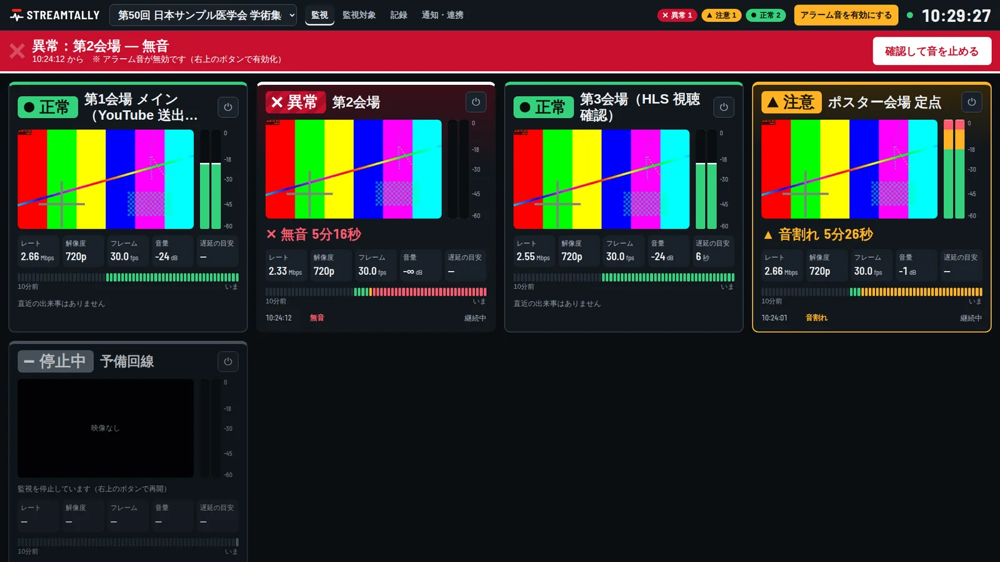
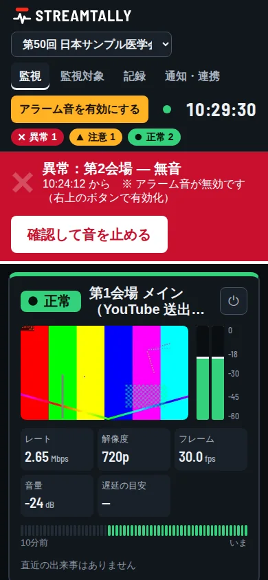
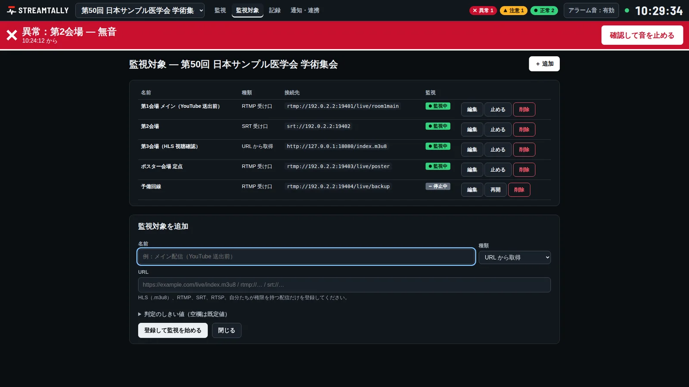
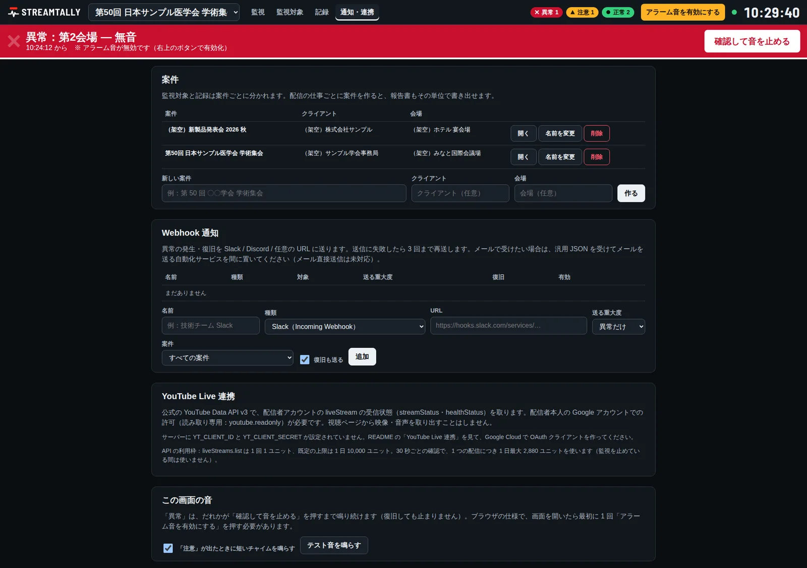
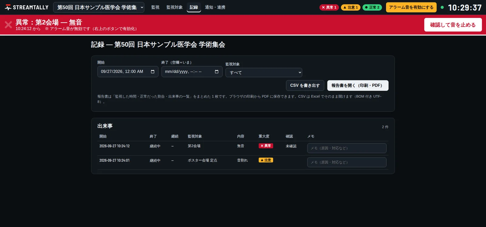
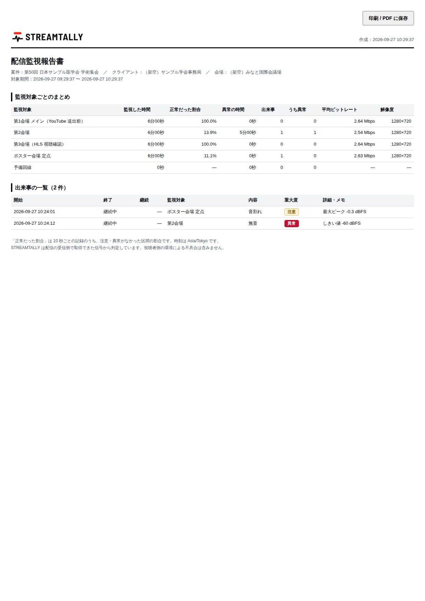

ライブ配信の映像と音を1画面で見張り、異常をすぐ知らせる監視ツール

画面のデータはすべて架空です（映像はテストパターン、音は正弦波）。
Detect
配信の現場で一番怖いのは「落ちていた／音が出ていなかったのに、本番中だれも気づかなかった」という事故です。STREAMTALLY は次の異常を常時判定します。
| 異常 | 判定 | 注意まで | 異常まで |
|---|---|---|---|
| 切断・受信停止 | 接続が切れた、データが来ない、HLS のプレイリストが更新されない | 0.1–3.6s | 3.3–5.6s |
| 無音 | 全チャンネルの音量が −60 dBFS 未満のまま続く | 5.4–6.8s | 15.4–17.1s |
| 音割れ | 0 dBFS 近く（−1 dBFS 以上）のピークが続く | 0.7–3.3s | — |
| 映像の静止 | 画が動かないまま続く（一部だけ動く画は静止にしない） | 3.2–4.6s | 10.2–12.6s |
| 黒味 | 画面のほぼ全体が黒いまま続く | 2.5–4.8s | 5.2–9.1s |
※ 秒数は、障害をわざと起こしたときの実測値です（テストパターン映像・初期設定・伝送の遅れを含みます）。
Dashboard
監視画面
配信ごとのカードで、全部を1画面に
- 状態を「色・形・文字」の3つで表示正常・注意・異常を、色だけに頼らず見分けられます。
- 計測値の実測ビットレート・解像度・フレームレート、音量メーター、1秒ごとのサムネイル、HLS の遅延の目安。
- 直近10分の履歴いつから、どのくらい続いているかが一目で分かります。

スマートフォン
現場を離れていても、状態を確かめられる
Sources

HLS · RTMP · SRT
URLで取りに行くか、エンコーダーから送ってもらうか
- 複数の配信を、案件ごとに配信に名前を付けて、案件ごとに登録します。
- URLで取得HLS（.m3u8）・RTMP・SRT。
- RTMP・SRT の受け口受け口にすると、エンコーダーの送出先が画面に表示されます。
Alerts

アラーム
赤い帯と警報音
- 「確認」を押すまで鳴り続ける確認したことは、ほかの画面にも伝わります。
- 発生と復旧を Webhook でSlack・Discord・汎用 JSON の形式で送り、失敗したら再送します。
※ Webhook は模擬の受信サーバーで3形式の受信を確認済み。本物の Slack・Discord への送信はまだ確認していません。
Records

記録
いつ・どの配信で・何が・何秒続いたか
- 出来事にメモを残せる
- CSV（Excel 対応）で書き出し

報告書
案件ごとの報告書（印刷・PDF）
- 監視した時間と、正常だった割合
- 出来事の一覧